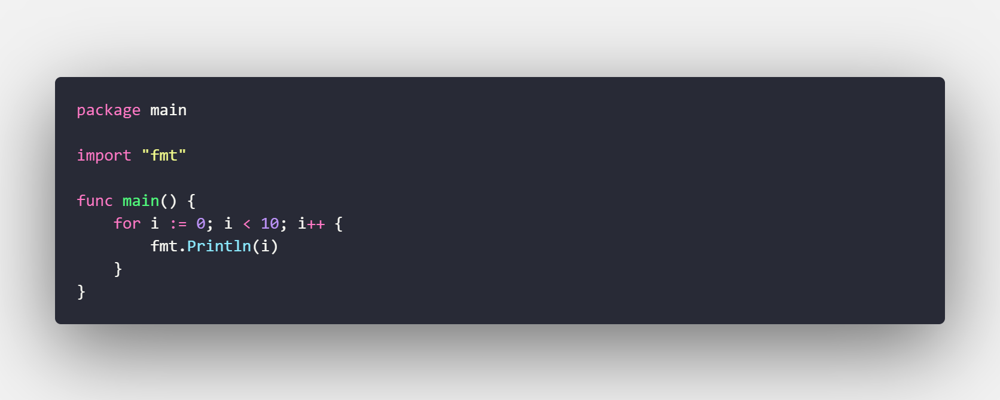

Nivel Intermedio.
En esta sección encontrara algunas, de las muchas diferentes tipos de estructuras que hay en el lenguaje GO.
Estas instrucciones nos ayudan a mejorar algunos procesos en nuestros programas y a evaluar ciertas condiciones o a repetir ciertas porciones de codigo que sean necesarias en algun momento.
Estructuras Selectivas
Las estructuras selectivas nos ayudan a evaluar ciertas condiciones que nosotros mismos especificamos para que si se cumple una condición especifica tomemos un camino u otro.
Selectiva simple if
Esta es la sentencia mas sencilla de utilizar y se encuentra en casi todos los lenguajes de programación.
Representa el paradigma de lo que sucede si una condición se cumple.
Selectiva doble if-else
Es la misma instruccion que la anterior a diferencia que en esta se especifica con la palabra clave else en caso de que no se cumpla la condición que es lo que realizara.

Selectiva anidada else-if
La sentencia anidada consiste en evaluar multiples condiciones sin necesidad de hacer de nuevo un bloque if en en el bloque else respectivo, nos permite anidar las instrucciones de una maera mas dinamica y poder evaluar las condiciones de una mejor manera.
Se pone las palabras claves else y if precedidos de un especio.Para proximamente evaluar la condicion y realizar ciertas acciones.
NOTA: Solo se pude hacer uso de dicha instruccion si ya se ha especificado antes un bloque if
Selectiva con declaración y condición en la misma instrucción
GO es un lenguaje muy comodo, en esta ocacion nos podemos dar cuenta que podemos declarar, inicializar y evaluar la condicion en la misma declaracion de la instruccion if.
Selectiva multiple switch
Este tipo de estructura nos permite evaluar mutiples condiciones al mismo tiempo ocupando la palabra clave case, y si por algun motivo ninguno de los valores que se solicitan son dados, entonces se ejecuta la condición por defecto especificada en este caso con la palabra clave default.
NOTA: no se pude hacer uso de default a menos que ya haya un case antes, y solo se puede hacer uso de valores, numericos enteros, y texto
Selectiva multiple switch (sin condición)
Gracias a la versatilidad del lenguaje GO ahora podemos ver otra nueva funcionalidad diferente a la mayoria de lenguajes, GO nos permite no especificar la variable de condición que se evaluara, siempre y cuando exista
Estructuras Repettivas o Bucles
Los "Bucles" nos ayudan a repetir ciertas partes de nuestro codigo, siempre y cuando se cumplan las condiciones que especifiquemos.
Podemos hacer bucles finitos, condicionados, infinitos, etc.
Bucle for
Esta estructura es el for "tradicional" que se ocupa en la mayoria de lenguajes de programación, especificamente los derivados del lenguaje C,
primero se limita el bloque de codigo con la palabra clave for, precedida de la declaración de la variable de control, inicialización, condición y su acción ya sea de incremento o decremento.
Estos bucles son muy utiles para situaciones en las que ya se sabe cuantas veces necesitamos repetir cierta acción.

Bucle for-while o for condicionado
Este es un blucle en el cual se especifica la condición que se debe de cumplir para que se deje de ejecutar, en la mayoria de lenguajes se le denomino bucle while, pero en GO lo ponen como for para facilitar al estudiante a que deje de memorizar tantas palabras clave y se centre en la funcionalidad de lo que esta haciendo aprendiendo diferentes formas de programar una estructura.
Bucle for-range
En este tipo de instrucción for se declara un indice el cual biene dado por la longitud del objeto en cuestion que se esta evaluando, por ejemplo: puede ser una cada de caracteres y de ella se toma la lomgitud la cuel ese valor de longitud sera las veces que se repetiran ciertas acciones dentro de este bucle for
Bucle for "infinito"
Es un bucle relativamente infinito. porque en cierto punto el bucle se evaluara sin condición alguna que lo pueda controlar, pero este depende del entorno en el que se encuentra.
Si por ejemplo lo ocupas en tu computadora personal, este se ejecutara hasta acabar el almcenamiento en el que el programa de este se este ejecutando.
NOTA: no es recomendable utilizar esta instrucción debido a problemas que pueda causar en tu equipo, solo es meramente informativo
Instrucción defer
Ahora uno no tan común. Defer permite realizar una declaración que se ejecutará al final de la función, antes del retorno, sin importar en que nivel de la misma fue declarada.